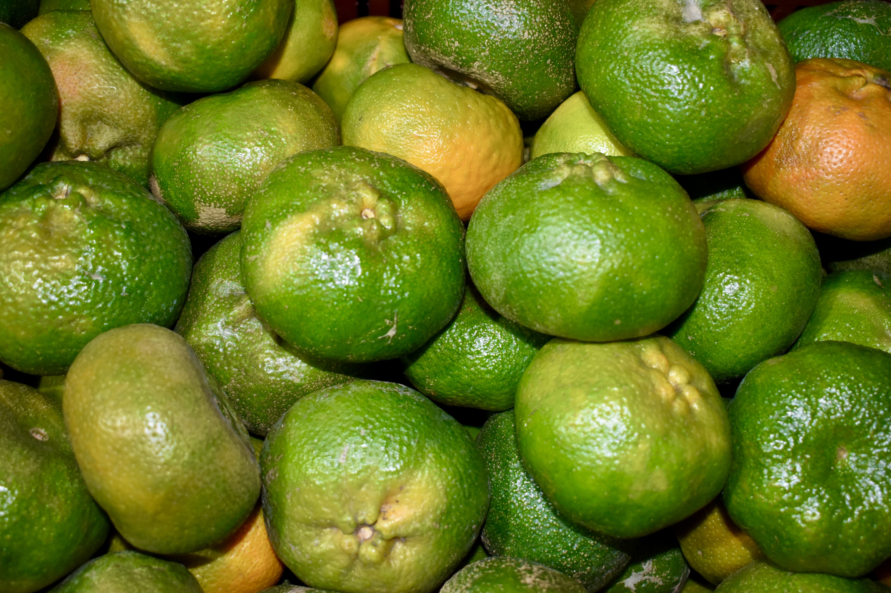
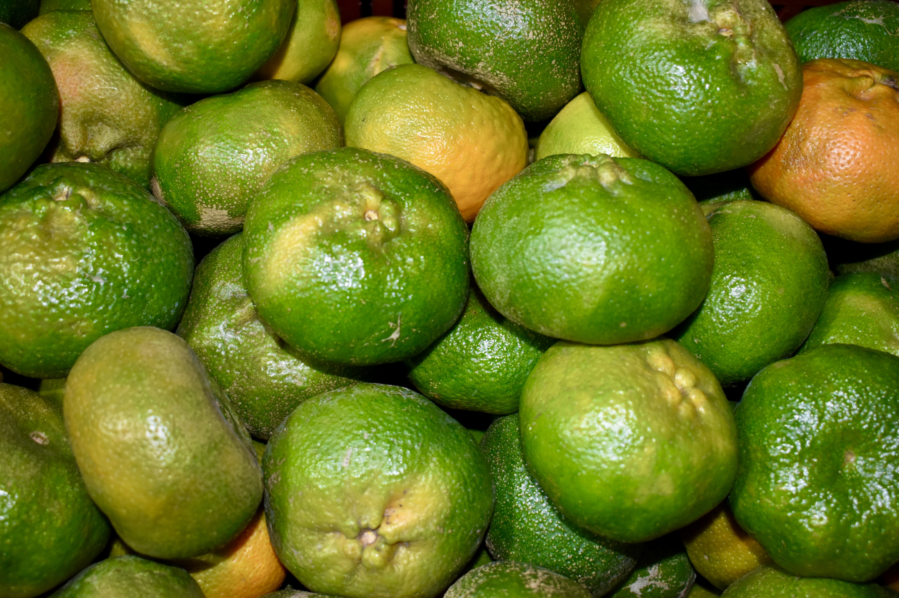
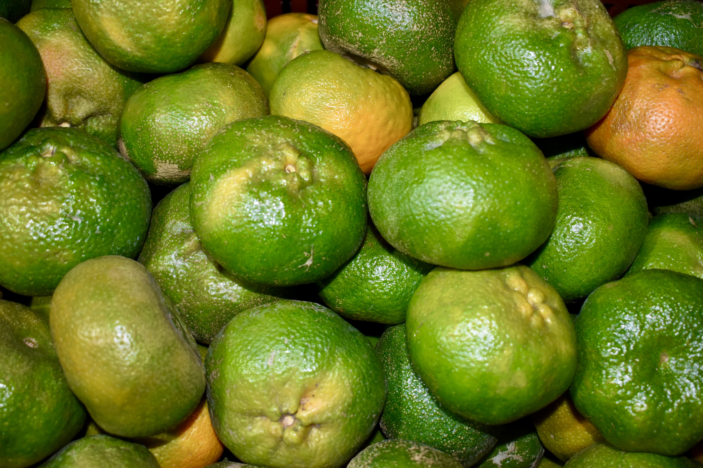

Galería
Los mejores cítricos de la central de abastos
Bienvenido a nuestra galería de imágenes. Aquí podrás ver algunos de nuestros productos y el proceso de producción.
 


Bienvenido a nuestra galería de imágenes. Aquí podrás ver algunos de nuestros productos y el proceso de producción.
